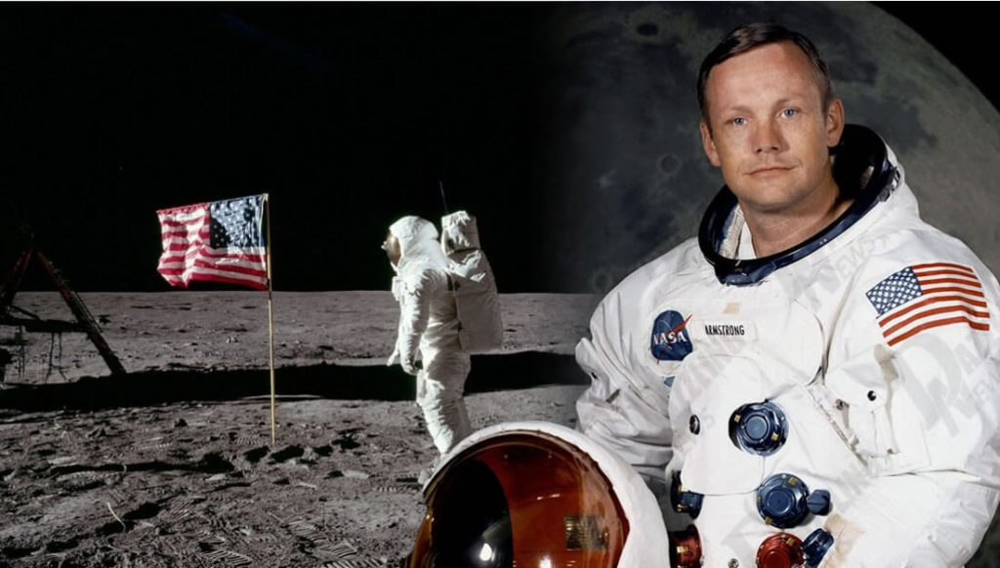
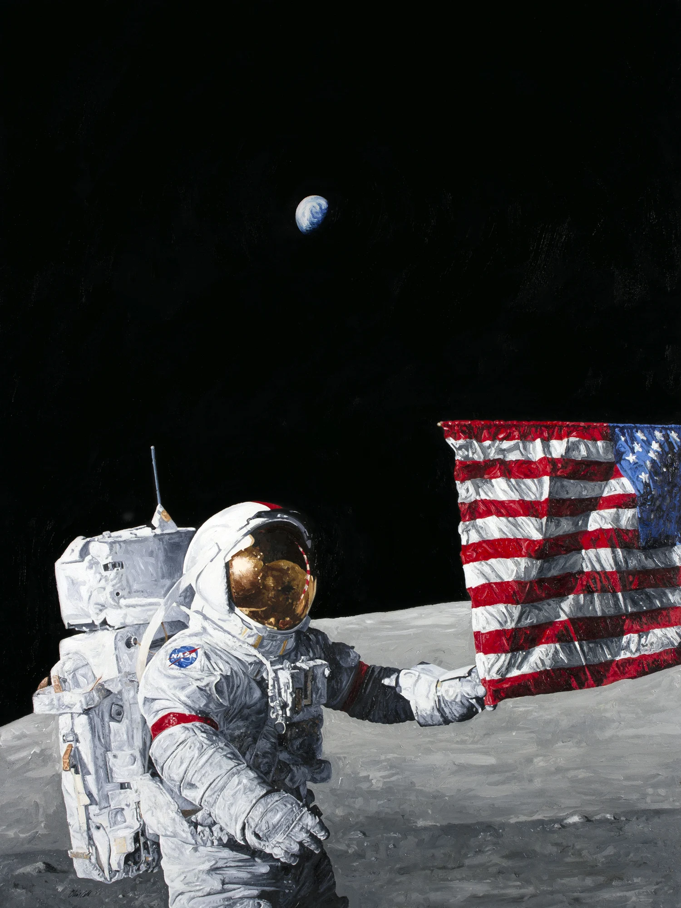
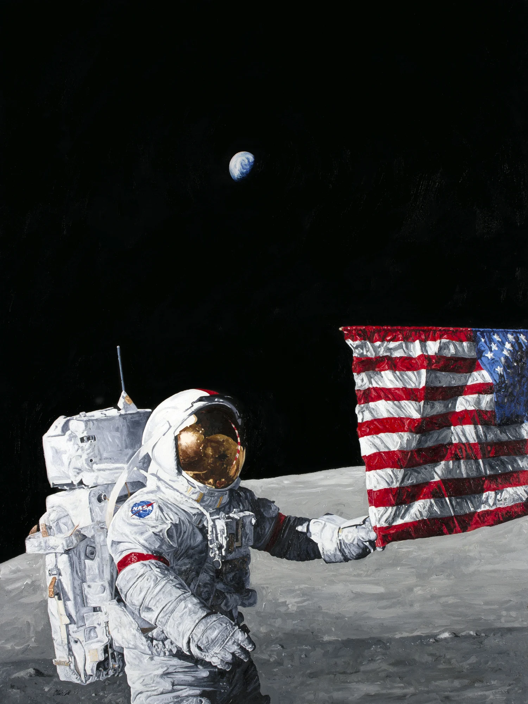

Infancia
En el mundo de la ciencia y la aeronáutica existen muchas personas importantes,
sin embargo, el más recordado, mencionado y popular es sin duda Neil Armstrong, el primer hombre que logró llegar a la luna y caminar sobre su superficie.
En su niñez se interesó por la aviación y durante su juventud logró alcanzar la meta.
Trabajó como piloto para la marina de los Estados Unidos y cuando se retiró, empezó a hacer trámites para unirse a la NASA donde inicialmente
trabajó como piloto en diferentes pruebas que buscaban verificar la capacidad
de aviones experimentales. Fue nombrado oficialmente como astronauta en el año 1962 y su primera misión la hizo a borde de Gemini 8.
Fue gracias a su esfuerzo y dedicación que el 16 de julio del año 1969,
Neil Armstrong viajó en el Apolo 11 convirtiéndose de esta manera en el primer hombre que logró poner un pie en la superficie de la luna.
Neil Armstrong fue un verdadero héroe, pues fue quien hizo posible la idea de que en algún momento el hombre podría habitar fuera de la tierra
al poner un pie y caminar sobre la luna.

 
